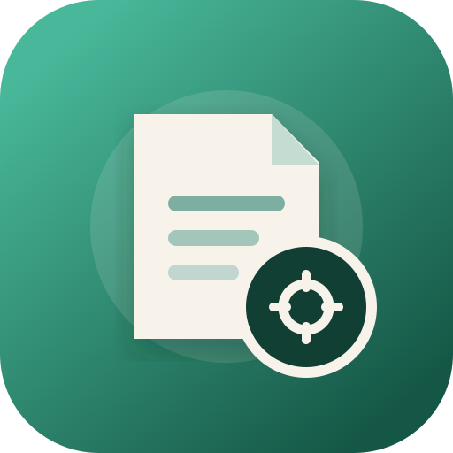
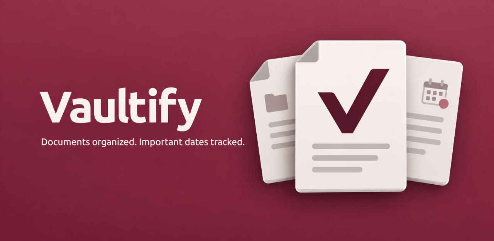

Kamera, galeri veya dosyalardan belge ekleyin.

Belge asistanı · Yakında · Yalnızca AndroidVaultify: Belge Asistanı
Belgelerinizi düzenleyin, önemli tarihleri zamanında hatırlayın. Vaultify; sözleşmelerinizi, poliçelerinizi, garanti belgelerinizi, araç evraklarınızı ve takip etmek istediğiniz diğer belgeleri tek yerde düzenlemenize yardımcı olan kişisel belge asistanıdır.
GOOGLE PLAYYakında

İhtiyacınıza göre düzenleyin
Hazır formatları kullanın veya kendi belge yapınızı oluşturun.
Belgelerinizi kendi klasörlerinizde saklayın; tarih, açıklama, parasal değer, sayı ve birim gibi alanları ihtiyacınıza göre ekleyip sıralayın.
Hazır formatlardan yararlanın veya kendi belge formatınızı oluşturun.
Her belge için önemli tarihlere yönelik birden fazla hatırlatıcı oluşturun.
Garanti, poliçe, araç muayenesi ve diğer önemli tarihleri takip edin.
Belgeyle ilişkili kişi, kurum ve açıklamaları kaydedin.
Belgeyle ilgili gelişmeleri tarih sırasıyla kaydedin.
Belge adı, özel alanlar ve süreç notları içerisinde arama yapın.
Verilerinizi yedekleyin ve gerektiğinde geri yükleyin.
Belgeleriniz düzenli, önemli tarihleriniz kontrolünüz altında.
Vaultify’ı kullanmak için hesap veya sürekli internet bağlantısı gerekmez. Yedeklerinizi ne zaman ve nereye aktaracağınıza siz karar verirsiniz.